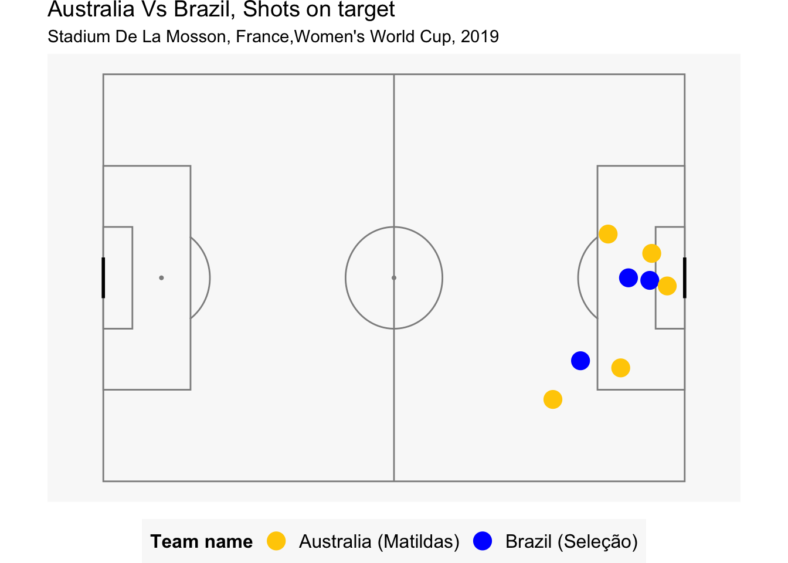
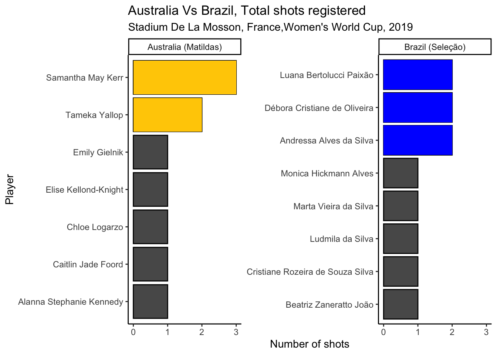
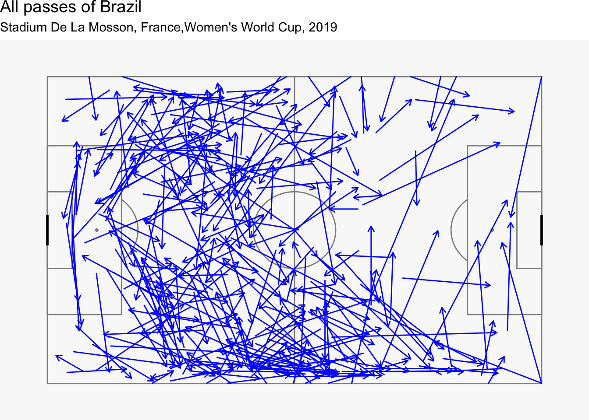
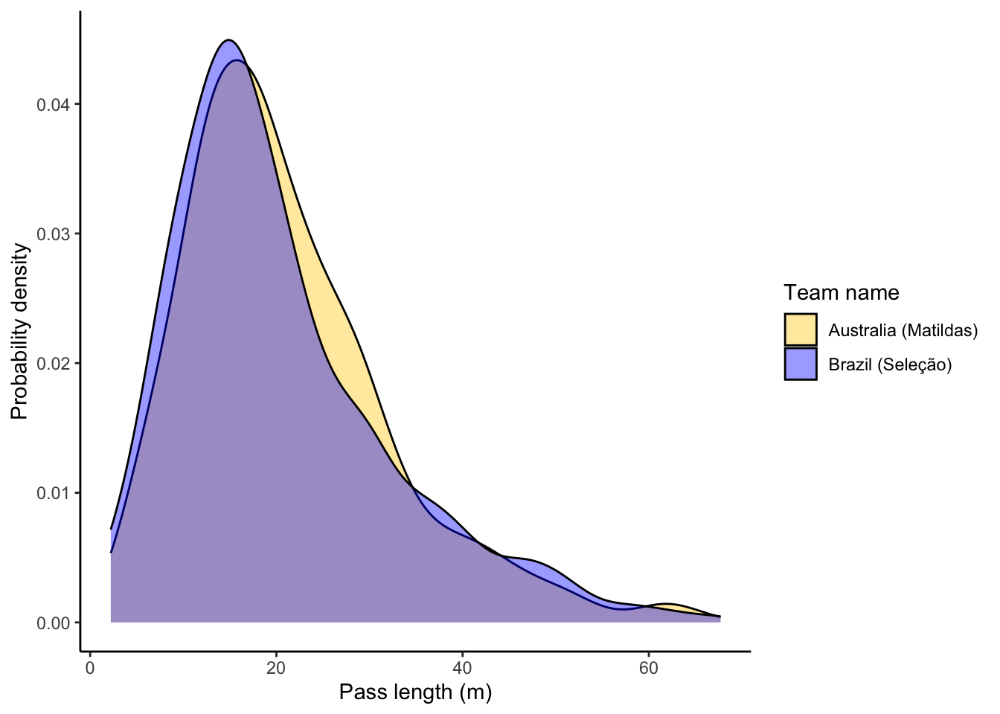
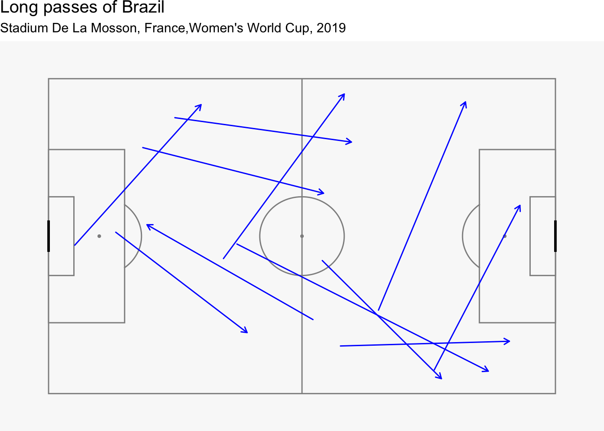
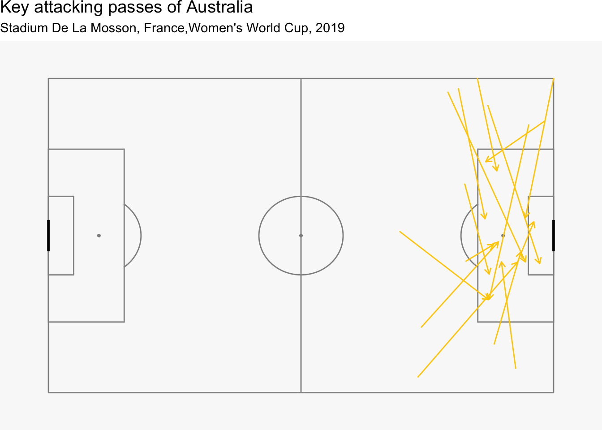
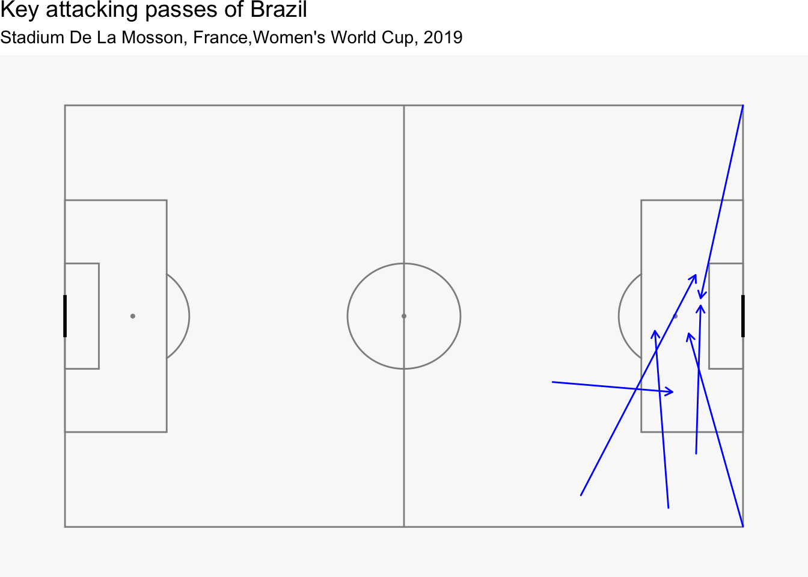

library(tidyverse)
library(plotly)
library(rvest)
library(StatsBombR)
library(SBpitch)
library(ggplot2)Q4
Exercise 4
A very successful 2023 Women’s World Cup soccer was held in Australia and New Zealand in the last two months. Data from the last one held in 2019 can be downloaded from R using the package StatsBombR. The data for the Australia vs Brazil match have been downloaded and processed and made available in the file aus_brazil.rda. The match was played on June 14, 2019, in Stade de la Mosson, in France, and Australia won 3-2. This question explores the match data. It will help if you install these packages:
A really nice introduction to working with the data is available here.
- Make a plot of shots on goal made by each team that looks like the following, and include your cleanly written code. (Note: 1.
locationhas the position from which passes were made, in the form of an array. You can access the x and y values usinglocation.xandlocation.y. 2. The positions have been processed so both teams are playing from left to right, so that it is easy to compare their play.)
Answer A
In order to visualise the shots on goal, we will filter the data with the following shot outcomes:
- Shots which led to goals.
- Shots which were saved by the goalkeeper.
The above two shot outcomes can be considered as “shots on goal” and will be visualised on the pitch through the code below.
on_goal_conditions <- c("Goal","Saved")
shots_on_goal <- aus_brazil %>%
filter(shot.outcome.name %in% (on_goal_conditions)) %>%
select(c(location.x,location.y,team.name,player.name)) %>% mutate(team_name = case_match(team.name,"Australia Women's"~"Australia (Matildas)",
"Brazil Women's"~"Brazil (Seleção)"))
pl1 <- create_Pitch() +
geom_point(data = shots_on_goal, aes(x = location.x, y = location.y,color=team_name),size=5) +
labs(color="Team name",
title = "Australia Vs Brazil, Shots on target",
subtitle = "Stadium De La Mosson, France,Women's World Cup, 2019") +
scale_y_reverse() + coord_fixed(ratio = 105/100) +
scale_color_manual(values=c('#FFCD00','Blue')) + theme(legend.position = "bottom")
pl1
Figure Figure 1 illustrates the number of shots on target in the match of Australia Vs Brazil for the Women’s World Cup. Following are the key observations:
- There were a total of 8 shots on target from both the sides.
- Of these 8 shots, Australia shot 5 goals on target while Brazil shot 3 goals on target.
- The above analysis can be further confirmed through the google analytics and can be referred to here.
- Summarise the shots for each country by player. Would you say that shots were a team effort or dominated by certain players?
Answer B
total_shots <- aus_brazil %>%
filter(shot.outcome.name != is.na(shot.outcome.name)) %>%
select(c(location.x,location.y,team.name,player.name,player.id)) %>% mutate(team_name = case_match(team.name,"Australia Women's"~"Australia (Matildas)",
"Brazil Women's"~"Brazil (Seleção)"))
total_shots_grouped <- total_shots %>% group_by(team_name,player.name) %>% mutate("Shot_incident" = 1) %>% summarise(Total_shots = sum(Shot_incident))
pl2 <- ggplot(data = total_shots_grouped,aes(x = reorder(player.name,Total_shots),y = Total_shots)) +
geom_col(color='black') + geom_col(data = ~filter(.x, Total_shots >= 2,team_name == "Australia (Matildas)"),fill = "#FFCD00") + geom_col(data = ~filter(.x, Total_shots >= 2,team_name == "Brazil (Seleção)"),fill = "blue")+ coord_flip() + facet_wrap(~team_name,scales = "free_y") + theme_classic() + labs(y = "Number of shots",x = "Player",title = "Australia Vs Brazil, Total shots registered",
subtitle = "Stadium De La Mosson, France,Women's World Cup, 2019")
pl2
Figure 2 illustrates the number of shots registered by each player of each country. Following are our key observations:
- There were a total of 21 shots registered by the 2 teams. Of these 21 shots, 11 were attributed to Brazil while the remaining 10 were attributed to Australia.
- A total of 7 players from Australia registered shots while 8 players from Brazil registered shots.
- It can be observed that two players of Australia, namely Samantha May Kerr and Tameka Yallop had higher shots than the rest of the team. Kerr was attributed with 3 shots while Yallop with 2 shots.
- On the other hand, there were 3 players of Brazil with 2 shots on target while the rest of the team had registered one shot.
- Based on our analysis, we can say that there were certain players in the Australian team who dominated the shots in the match.
- For Brazil however, we can say that the shots were contributed nearly uniformly from the entire team.
- Now let’s take a look at passes. The location from which passes are made could be characteristic of a team. Make a lineup to test whether the position from which a pass was made was different between Australia and Brazil. Conduct a visual inference analysis to determine if the actual plot can be distinguished from the null plots. Report your \(p\)-value, after asking 8 of your friends to judge your lineup, and summarise your findings.
passes_aus = aus_brazil %>%
filter(type.name=="Pass" & is.na(pass.outcome.name) & team.name == "Australia Women's")
create_Pitch() +
geom_segment(data = passes_aus, aes(x = location.x, y = location.y,
xend = pass.end_location.x, yend = pass.end_location.y), lineend = "round", size = 0.5, colour = "#FFCD00", arrow =
arrow(length = unit(0.07, "inches"), ends = "last", type = "open")) + labs(title = "All passes of Australia",subtitle = "Stadium De La Mosson, France,Women's World Cup, 2019")
passes_bra = aus_brazil %>%
filter(type.name=="Pass" & is.na(pass.outcome.name) & team.name == "Brazil Women's")
create_Pitch() +
geom_segment(data = passes_bra, aes(x = location.x, y = location.y,
xend = pass.end_location.x, yend = pass.end_location.y), lineend = "round", size = 0.5, colour = "blue", arrow =
arrow(length = unit(0.07, "inches"), ends = "last", type = "open")) + labs(title = "All passes of Brazil",
subtitle = "Stadium De La Mosson, France,Women's World Cup, 2019")
Upon analysing the completed passes made by Australia and Brazil throug Figure 3 and Figure 4, we observe the following:
- Australia made more number of successful passes as compared to Brazil as can be observed through the density of the arrows in the two figures.
- Australia were observed to effectively use the left and right flanks.
- On the other hand, Brazil were observed to overload the right flank but not use the left flank as much.
- Australia were also observed to play centrally with more passes in the middle of the field as compared to Brazil.
- The type of passes can also be characteristic of a team’s play. Explore this with the variable
pass.length, using a visual inference analysis.
Answer D
pl5 <- ggplot(data = aus_brazil %>% mutate(team_name = case_match(team.name,"Australia Women's"~"Australia (Matildas)",
"Brazil Women's"~"Brazil (Seleção)")),aes(x = pass.length,fill = team_name)) + theme_classic() + geom_density(alpha=0.4) + labs(x = "Pass length (m)",y = "Probability density",fill = "Team name") + scale_fill_manual(values=c('#FFCD00','Blue'))
pl5
Based on the analysis of Figure 5, we can observe the pass lengths of both teams are very similar. However, these passes could be in different locations on the pitch. Hence, we need to explore this variable further.
passes_bra = aus_brazil %>%
filter(type.name=="Pass" & is.na(pass.outcome.name) & team.name == "Australia Women's" & pass.length > 40)
create_Pitch() +
geom_segment(data = passes_bra, aes(x = location.x, y = location.y,
xend = pass.end_location.x, yend = pass.end_location.y), lineend = "round", size = 0.5, colour = "#FFCD00", arrow =
arrow(length = unit(0.07, "inches"), ends = "last", type = "open")) + labs(title = "Long passes of Australia",
subtitle = "Stadium De La Mosson, France,Women's World Cup, 2019")
passes_bra = aus_brazil %>%
filter(type.name=="Pass" & is.na(pass.outcome.name) & team.name == "Brazil Women's" & pass.length > 40)
create_Pitch() +
geom_segment(data = passes_bra, aes(x = location.x, y = location.y,
xend = pass.end_location.x, yend = pass.end_location.y), lineend = "round", size = 0.5, colour = "blue", arrow =
arrow(length = unit(0.07, "inches"), ends = "last", type = "open")) + labs(title = "Long passes of Brazil",
subtitle = "Stadium De La Mosson, France,Women's World Cup, 2019")
Based on our analysis of Figure 6 and Figure 7, we can make the following observations:
- Most long passes for Australia originated from the Goalkeeper’s position
- On the other hand, Brazil’s long passes originated from the defense. This suggests that Brazil employed short goal kicks while Australia flung more balls from the goalkeeping position to an attacking position.
passes_aus = aus_brazil %>%
filter(type.name=="Pass" & is.na(pass.outcome.name) & team.name == "Australia Women's") %>% #1
filter(pass.end_location.x>=102 & pass.end_location.y<=62 & # Only key attacking passes
pass.end_location.y>=18)
create_Pitch() +
geom_segment(data = passes_aus, aes(x = location.x, y = location.y,
xend = pass.end_location.x, yend = pass.end_location.y), lineend = "round", size = 0.5, colour = "#FFCD00", arrow =
arrow(length = unit(0.07, "inches"), ends = "last", type = "open")) + labs(title = "Key attacking passes of Australia",
subtitle = "Stadium De La Mosson, France,Women's World Cup, 2019")
passes_bra = aus_brazil %>%
filter(type.name=="Pass" & is.na(pass.outcome.name) & team.name == "Brazil Women's") %>% #1
filter(pass.end_location.x>=102 & pass.end_location.y<=62 & # Only key attacking passes
pass.end_location.y>=18)
create_Pitch() +
geom_segment(data = passes_bra, aes(x = location.x, y = location.y,
xend = pass.end_location.x, yend = pass.end_location.y), lineend = "round", size = 0.5, colour = "blue", arrow =
arrow(length = unit(0.07, "inches"), ends = "last", type = "open")) + labs(title = "Key attacking passes of Brazil",
subtitle = "Stadium De La Mosson, France,Women's World Cup, 2019")
Upon analysing the key passes as illustrated by Figure 8 and Figure 9, we can make the following observations:
- Australia was able to make more number of key passes in the box as compared to Brazil.
- Brazil were able to make only 4 outfield passes in the box while the other 2 were attributed to corners.